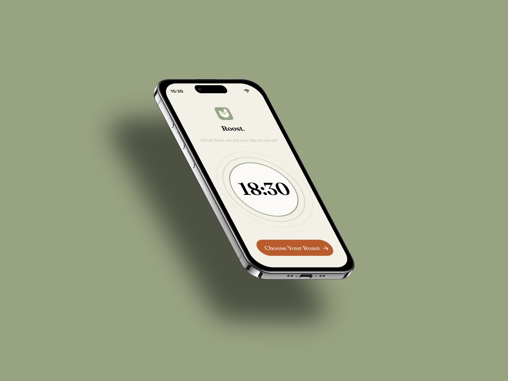
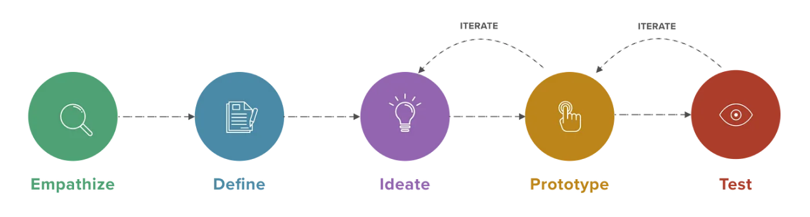
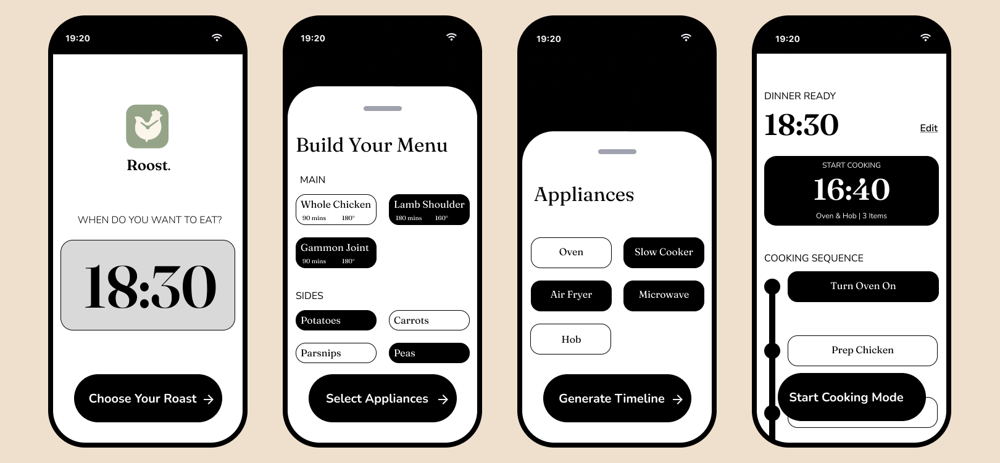
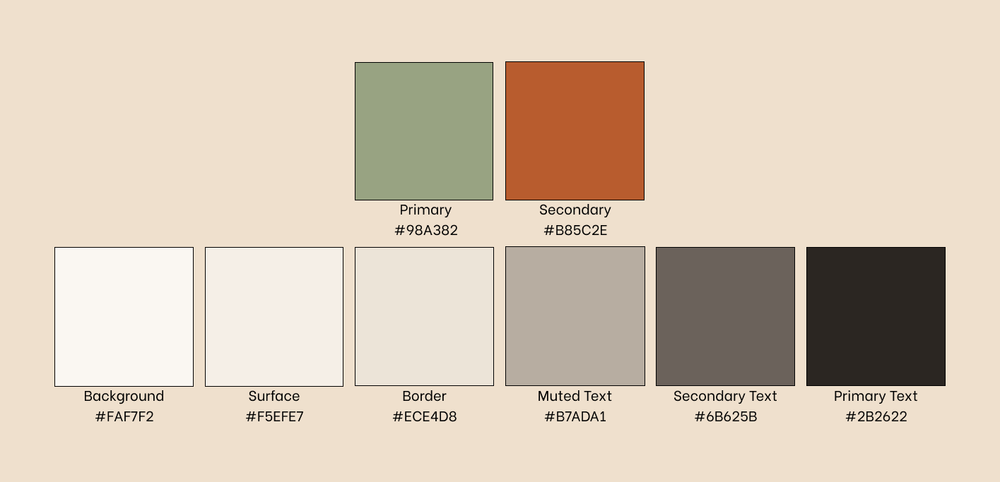
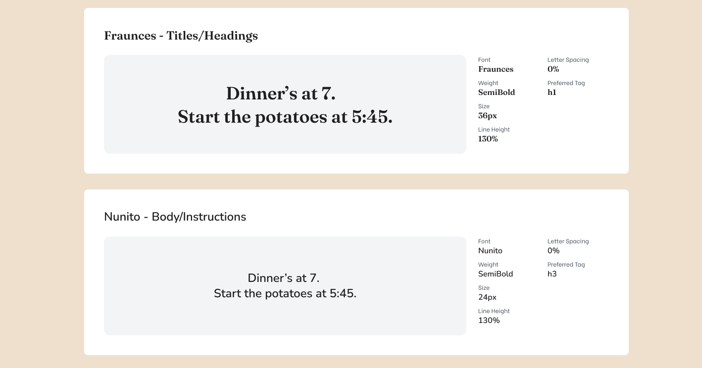
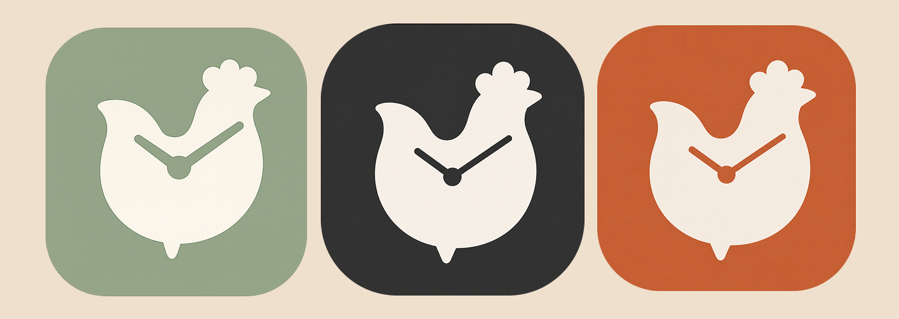
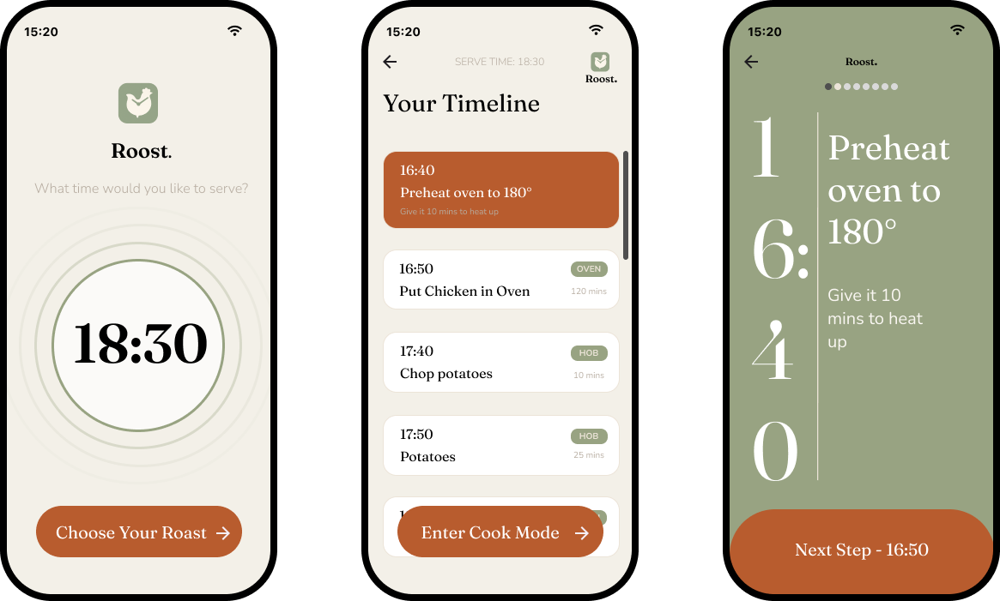

Users did not want another screen full of cooking content. They wanted help knowing what to do next and when to do it.
UX Research / Branding / UX/UI Design
Roost.
A roast dinner planning app inspired by my Dad’s strangely useful Christmas spreadsheet.
Roost helps users work backwards from a serving time, build a realistic cooking timeline, and feel less panicked when every dish suddenly seems to need attention at once.

Overview
The idea started at Christmas
For years, my Dad used an Excel spreadsheet to cook the turkey on Christmas Day. Weird, right? We thought so too. The spreadsheet only needed one thing from him: the time we wanted to eat. From there, it worked backwards through the cooking process and gave him exact times for each step.
After years of giving him a hard time for it, we realised he may have actually been onto something. Friends started asking for the spreadsheet, and what looked like a family joke suddenly felt like a real design problem.
It made me think about how stressful roast dinners can be. Different recipes, multiple appliances, several ingredients, and a fairly unforgiving serving time. Through user research and competitor analysis, it became clear that the stress was less about cooking ability and more about keeping everything coordinated.
Problem
Most cooking apps help you choose what to make. They do not always help you get it all ready together.
Roast dinners are awkward because they involve lots of small decisions happening at the same time. The oven is full. The potatoes need checking. Something has to rest. Something else is boiling over. Even confident cooks can feel the pressure when the meal depends on several things landing at once.
Existing tools tend to sit at either end of the problem. Recipe apps offer inspiration and instructions, while simple calculators give timings without much reassurance. Roost sits between the two: less of a recipe library, more of a calm planning companion.
The design challenge was to turn a useful spreadsheet logic into something that felt calm, readable, and human in the middle of a busy kitchen.
My Design Process

Research
Everyone recognised the stress, but younger users felt it most sharply.
I conducted interviews with users aged 25–70. Every participant had experienced stress while making a roast dinner, but the most obvious pressure appeared in the 25–40 group. Older users still described stressful moments, though many had built habits over time and were more set in their routines.
A useful contradiction also appeared. Most users already used technology while cooking, but every participant had also felt more stressed because of apps or devices in the kitchen. That shaped the direction of the product. Roost could not just add more information. It had to reduce the noise.
| 5 out of 5 | users had experienced stress while making a roast dinner. |
|---|---|
| 4 out of 5 | regularly used technology or apps while cooking. |
| 5 out of 5 | had experienced increased stress because of apps or technology while cooking. |
| 3 out of 5 | had thrown away food while making a roast because something had spoiled, burned, or gone wrong. |
"I literally wasted £45 on a roast, and my guests hadn't even arrived yet. I nearly cried"
- Disgruntled ruined roast victim
Customer Journey
Mapping the roast around the moments where confidence drops
The journey map helped me think beyond the cooking instructions themselves. I wanted to understand where a user might discover the product, what would make them trust it, and where stress would be most likely to creep back in during the cooking process.
Click on the image to zoom in.

Customer journey map exploring discovery, planning, cooking, and repeat use.
Competitor Analysis
The gap sat between inspiration and orchestration
Looking at recipe apps and roast timing tools helped clarify where Roost could sit. Recipe apps were often polished, but not focused on coordinating a whole meal. Timing tools were useful, but often felt narrow or functional. The opportunity was to combine enough guidance with enough calm.
Click on the image to zoom in.

Competitor analysis looking at recipe discovery, roast calculators, timing tools, and cooking support.
Insights
The app had to feel trustworthy before it felt clever.
The most stressed users were often comfortable with technology, but less confident with the cooking routine itself.
If the interface became too busy, it risked becoming part of the problem. Calmness had to be treated as a product feature.
Users
Two levels of confidence shaped the design direction
I used two working personas to keep the product grounded. One represented a younger, digitally confident user who needed reassurance with the cooking process. The other represented someone with more cooking experience who still wanted clarity when the kitchen became busy.

Jamie Carter
Beginner student cook
Jamie is comfortable with apps, but not especially confident cooking a full roast. He needs the process broken down clearly without feeling patronised or overloaded.
"I am confident in the kitchen, but juggling multiple tasks can be overwhelming."

Liz Foster
Intermediate home cook
Liz cooks more regularly and has her own habits, but she still values readable instructions, simple layouts, and a clear plan when several things are happening at once.
"I know what to do, but I want to feel less stressed when everything needs attention at the same time."
Ideation
Once the app worked backwards, the product started to make sense.
The spreadsheet logic became the heart of the product. Instead of asking users to calculate when everything should start, Roost begins with the time they want to serve and builds the cooking plan backwards.
That changed the role of the app. It was not there to impress the user with features. It was there to quietly remove uncertainty.
Core Flow
A simple setup leading into a timed cooking plan
01
Set serving time
02
Add roast and sides
03
Select appliances
04
Generate timeline
05
Start cook mode

Prototype
Testing the cooking flow before visual design
Before moving into high-fidelity designs, I created an interactive low-fidelity prototype to test the overall cooking journey. This helped validate the sequence of steps, navigation patterns, and the level of guidance users would need throughout the cooking process.
Click on the interactive prototype below to explore the basic cooking flow!
Interactive low-fidelity prototype exploring the guided cooking experience.
Solution
A calm cooking companion, not another recipe app
Roost allows the user to enter a serving time, add produce, select appliances, and receive a plotted cooking timeline. The main value is not novelty. It is the reassurance of knowing when each step needs to happen.
A future cook mode would make the experience even simpler during live cooking. The user would see the current task, the next two steps, and essential timings, with a simple tap to move through the instructions as they go.
Branding
Warm, clear and not too 'in your face'
The brand direction is built around warmth and steadiness rather than a loud food-app personality. I wanted to have a green sage-y colour to emulate the greens and herbs of the roast, and the terracotta orange was initially inspired by the ideal colour of a roast chicken.
I also led with the terracotta orange logo for the first week before realising this was basically the Popeye's logo... I'm glad I came to my senses and opted to lead with the sage colour.



Final UI
High-Fidelity Design
After conducting all my research, it was clear that the main focus of this app should be calmness. I used inspiration from apps like Calm and Headspace which helped me create visuals throughout. Whilst I initially had grand plans of making this a deeply complex and cool app, I soon realised that, sometimes, simplicity is key.

Click on the interactive prototype below to explore the full app.
Interactive high-fidelity prototype exploring the guided cooking experience.
Reflection
The idea resonated because the problem was familiar.
The response to the concept was encouraging. All five users said Roost would help with stress around making a roast. Three users also asked about in-app timers, which suggested that the live cooking experience should become a bigger part of the next design iteration.
| 5 out of 5 | said the app would help reduce their stress around cooking a roast. |
|---|---|
| 3 out of 5 | asked about in-app timers, suggesting that live cooking support should be prioritised next. |
If I took this further, I would focus on what happens when the plan slips. A good roast app should not only create the ideal timeline. It should help users recover when real life gets in the way.
Design Direction
A confidence engine for roast dinners.
Roost is strongest when it stays focused: not another content-heavy recipe app, but a practical planning tool that makes a stressful meal feel more manageable.